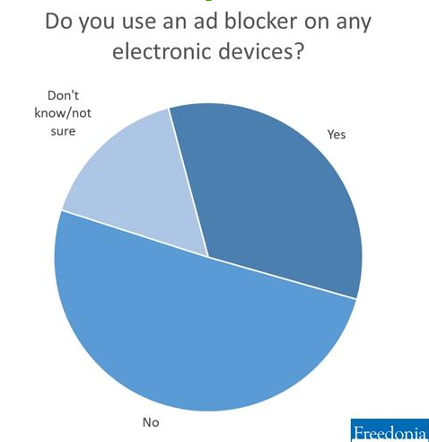

Challenges of Digital Advertising
As consumer eyeballs have moved from TV and print media to online, advertising spenders have followed. Expenditures on print advertising have experienced long-term decline as advertisers have shifted spending to internet advertising. While traditionally dominant advertising channels such as TV and radio continue to play an important role in media consumption, digital media – including the use of apps, social media, internet videos, and web browsing – is becoming the leading category. As a result, advertisers are diverting spending from TV advertising to internet-based ads.
Ad Blocker
However, this new territory is full of fresh difficulties for advertisers. For instance, the use of ad blockers that prevent ads on webpages from displaying is relatively common. A recent survey by Freedonia Focus Reports found that approximately one-third of internet users in the US employ ad blockers. These programs are believed to cost internet publishers and marketers billions of dollars in lost revenue. In February, Google’s Chrome web browser started automatically blocking ads that didn’t meet the Better Ads Standards requirements.
Quality Problems
Digital advertising also faces other problems. Critics of digital advertising argue the medium is subject to advertising fraud and brand safety issues. For instance, advertisements in social media feeds might be visible for only a couple seconds or appear near controversial content. Procter & Gamble, the biggest advertising spender globally, has been leading the charge to change digital advertising. In 2017, the company cut its digital advertising expenditures by $200 million in a move to push for tech companies to clean up the digital advertising landscape. P&G has also recently announced plans to do more digital media planning and buying in-house. As with many industries that experience rapid growth, digital advertising is certain to involve further growing pains. However, the industry has begun working to address advertiser concerns.
Author: Luke Hickman